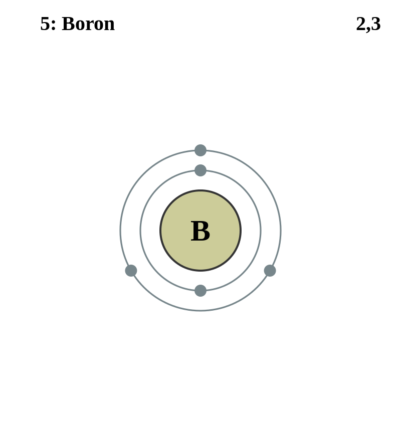

Basic Information about the element
Basic Information about the element
Name: Boron
Symbol: B
Atomic Number: 5

1s2 2s2 2p1
The chemical element boron is classed as a metalloid.
It was discovered in 1808 by Joseph L. Gay-Lussac and L.J. Thénard and independently by Sir Humphry Davy.
| Number of Protons/Electrons: | 5 |
| Number of Neutrons: | 6 |
| Atomic Mass: | 10.811 amu |
| Melting Point: | 2300 °C |
| Boiling Point: | 2550 °C |
| Classification: | Metalloid |
| Uses: | For making heat resistant alloys |